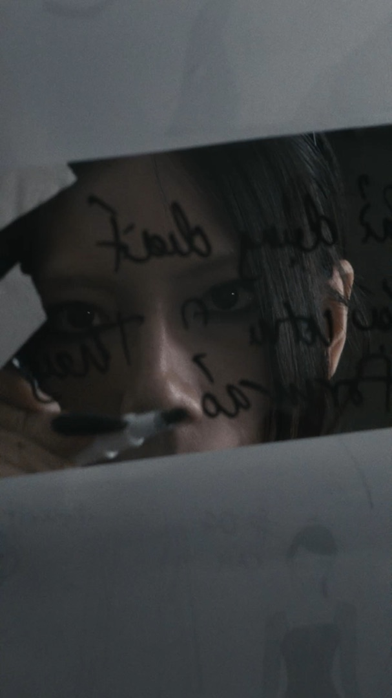
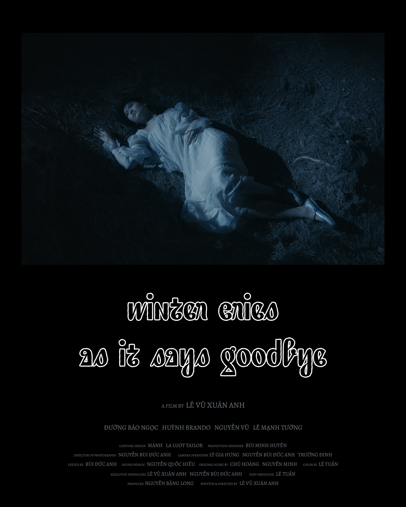
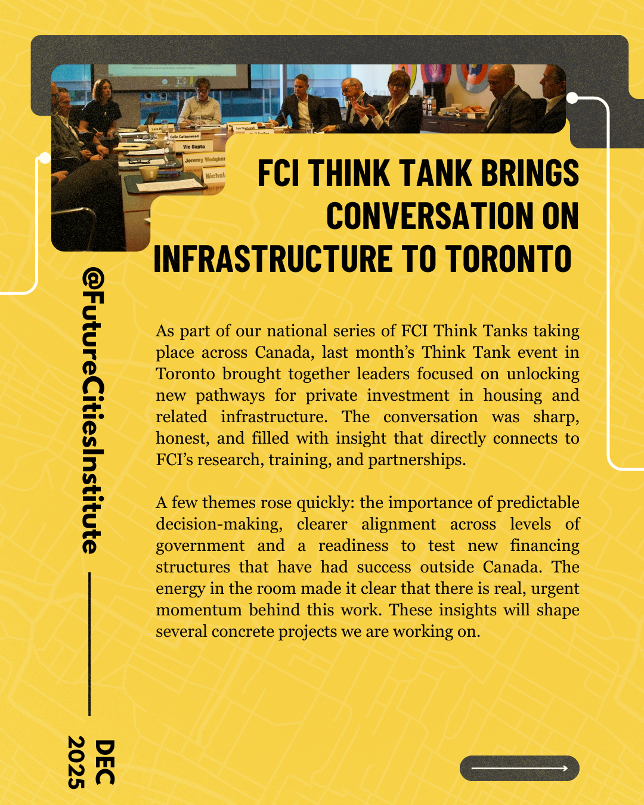
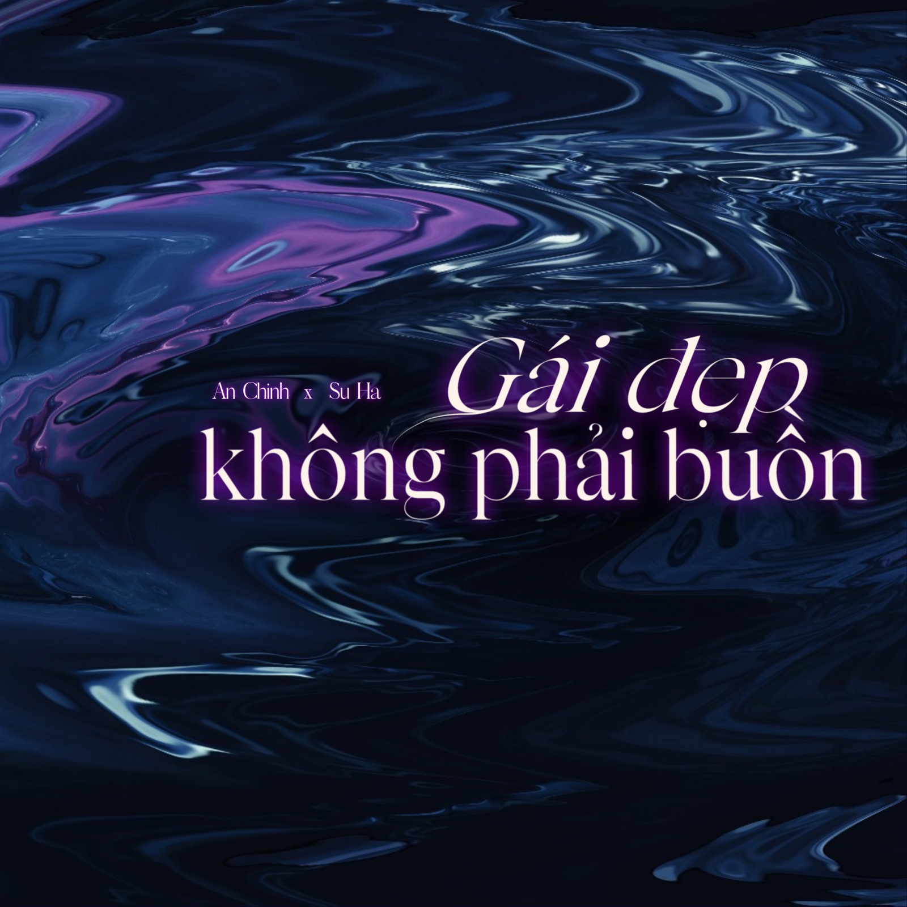

To save as PDF: press ⌘P (or File → Print), set Destination to “Save as PDF,” Paper size to “Letter,” and Margins to “None.” This note and the grey background don’t print.
Portfolio — Selected Work, 2024–2026
Lê Vũ Xuân Anh
Filmmaker & Designer — director, screenwriter, editor, UI/UX designer
Waterloo, Ontario — originally Hanoi, Vietnam
frank.lvxa@gmail.com — linkedin.com/in/vxale

About
I studied international relations in my first year, but my passion leads me to writing, photography, and filmmaking. My ambition is always to become a creative and film director, and one day I will have my films screened to audiences around the world.
I always want to learn more about the world's cultures and the constantly evolving industry of the arts to become a part of it. Following that ambition, in 2023, I moved to Canada in pursuit of a bachelor's degree in Global Business and Digital Arts at the University of Waterloo.
Since then, I have been producing, writing, and directing my own short films, as well as working with micro-level clients in the music and fashion industry. My interest now lies in the arts and the human condition in a society deeply integrated with AI and automation — what we hold on to, and what we let go.
Open to work and collaboration. Let's sync up our wavelengths.
01 — Film, Commercial, 2026
TẤM CÁM BY MẢNH

A work-in-progress visualizer for MẢNH, a Vietnamese tradition-inspired fashion brand, following founder T R A G's one-shot comic take on the folklore "Tấm Cám" — from concept, to notes, to artwork, to the finished garment. Shot entirely on iPhone 17 Pro Max.
Credits
BrandMẢNH
Creative Director & Executive ProducerT R A G
Video DirectorLê Vũ Xuân Anh
Director of PhotographyDucanh Demen
Camera OperatorDucanh Demen
ModelVân An, Phan Trâm Anh
Set DesignMinh Huyền
Line ProducerLong Le
Art DirectorHoài Anh
GafferNguyễn Tùng
LightingLễ Chí Nguyễn, behelitht
MUAThị Ly
Nail ArtistAmy Phạm
AccessoriesHi'deMaison.silver
EditorDucanh Demen, Lê Vũ Xuân Anh
ColoristQuoc Anh Dang
BTSbehelitht
Project AssistMai Đan Vy, Sundy Đào
02 — Film, Personal, 2026
Winter Cries as It Says Goodbye

A sci-fi / horror / mystery / romance short: as a mysterious pandemic spreads, a scientist must choose whether to put his faith in science or in something else entirely. Shot in digital infrared — light the eye can't see, where leaves turn white as snow — as an exploration of how technology and AI reshape the human condition.
Credits
Written & Directed byLê Vũ Xuân Anh
CastĐường Bảo Ngọc, Huỳnh Brando, Nguyễn Vũ, Lê Mạnh Tường
ProducerNguyễn Bằng Long
Executive ProducersLê Vũ Xuân Anh, Nguyễn Bùi Đức Anh (Ducanh Demen)
Director of PhotographyNguyễn Bùi Đức Anh (Ducanh Demen)
Camera OperatorsLý Gia Hưng, Nguyễn Bùi Đức Anh (Ducanh Demen), Trường Đinh
Production DesignerBùi Minh Huyền
Costume DesignMẢNH, La Luot Tailor
Edited byBùi Đức Anh
Sound DesignNguyễn Quốc Hiếu
Original ScoreChú Hoàng, Nguyễn Minh
ColorLê Tuấn
Post-ProducerLê Tuấn
03 — Film, Commercial, 2026
Vision of Love
A wedding-film collection for Trang Phi Bridal, capturing the elegance, desire, pride, and passion of womanhood in five looks.
Credits
BrandTrang Phi Bridal
DirectorLê Vũ Xuân Anh
ModelVân An
Director of PhotographyDucanh Demen
Camera OperatorDucanh Demen
LightingNguyễn Tùng
Post-productionDucanh Demen
04 — Design, Commercial, 2025
FCI Monthly News Recap

A monthly Instagram/LinkedIn carousel template for the Future Cities Institute, turning urban-planning research into a digestible, accessible visual system — built around the University of Waterloo's brand palette. Contributed to 63% higher impressions and 32.5% follower growth on LinkedIn in two months.
Credits
BrandFuture Cities Institute, founded by CAIVAN
DesignLê Vũ Xuân Anh
05 — Design, Commercial, 2026
Gái Đẹp Không Phải Buồn — Key Visuals

Cover art, poster, and thumbnail for the Afro-House single "Gái Đẹp Không Phải Buồn" by An Chinh × Su Ha, designed alongside directing its visualizer.
Credits
ArtistsAn Chinh, Su Ha
Creative DirectorLê Vũ Xuân Anh
DesignerNguyễn Hải Phương Anh
Thank you
More work, full case studies, and film available at the link below. Open to work and collaboration.
Business inquiries
frank.lvxa@gmail.com
Academic inquiries
vxale@uwaterloo.ca
LinkedIn
linkedin.com/in/vxale
Full portfolio — levuxuananh.com